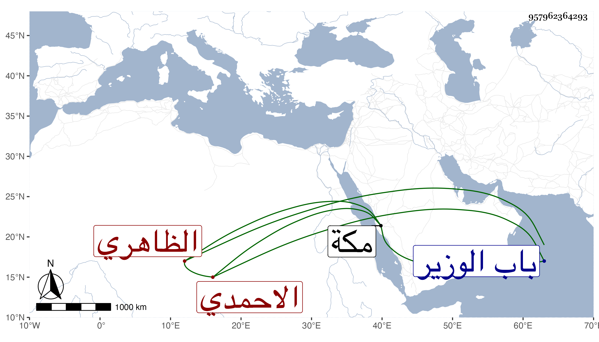

0902Sakhawi.DawLamic.ITO20230111-ara1.EIS1600.957962364293
Biography ID: 957962364293
555
فاطمة ابنة اينال الاحمدي الظاهري برقوق ابنة أخت الأمين الاقصرائي وأخت المحب الاقصرائي وتعرف بابنة الاقصرائي . ولدت على رأس القرن ونشأت فتزوجها واحد بعد آخر ثم يشبك من مهدى في ابتدائه واستمرت معه حتى ترقى للداوادرية الكبرى وامرة سلاح بل صار فريد المملكة وراعي لها قدم صحبتها مع اعتقاده فيها البركة والخير وتمولت من قبله جدا ، وحجت غير مرة منها بعد موته في سنة ست وثمانين وجاتورت بمكة التي تليها ورجعت متوعكة فلم تلبث أن ماتت في ليلة الاربعاء خامس جمادى الثانية سنة ثمان وثمانين وصلى عليها من الغد بسبيل المؤمنى في جمع فيه السلطان ودفنت بتربة أسلافها خارج باب الوزير واحتيط على موجودها وهو شيء كثير ، وكانت خيرة رحمها الله وإيانا .
